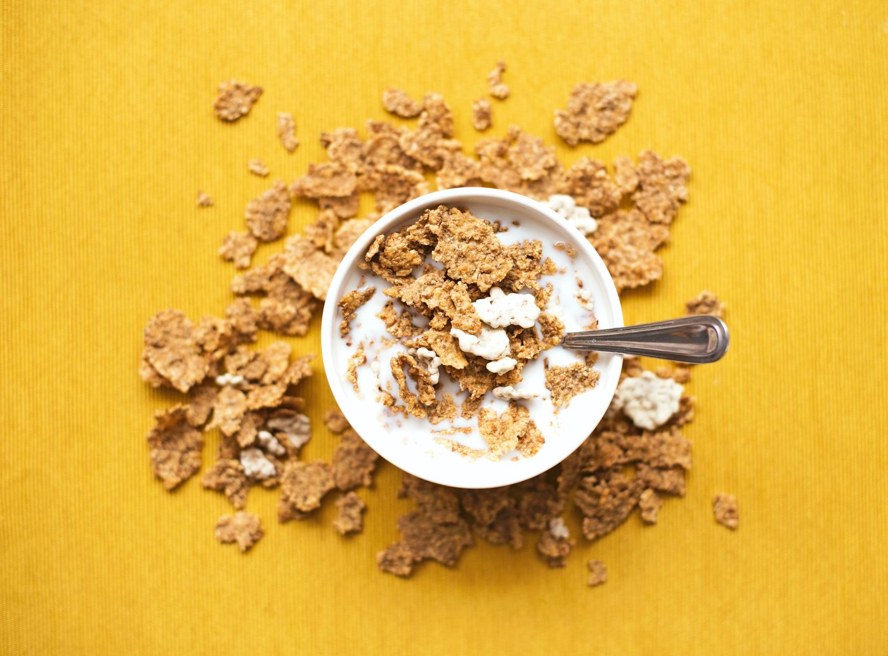

Section 1.1: Populations, Samples, and Terminology
Learning Objectives
1.Identify and differentiate between populations and samples
2.Identify and differentiate between parameters and statistics
3.Identify and classify variables as qualitative or quantitative
4.Identify and classify qualitative variables as nominal or ordinal
5.Identify and classify quantitative variables as discrete or continuous
Statistics are found everywhere. We use statistics to understand the world around us and to help us to make decisions that are based on evidence. In sports, statistics are used to measure speed of a baseball thrown in a game, or free-throw percentage in basketball. In education, statistics are used to analyze passing rates and assist in placement. In Medicine, statistics are used to measure the percent of the population who are vaccinated against the flu, or to assess the effectiveness for a treatment of a disease. In science, you would use statistics to study climate change. In business statistics are used to make decisions on marketing. Sociologists might use statistics to study whether white and non-white students have substantially different access to educational resources.
To begin any statistical study, we need to collect information. The information we collect is called data.
Definition 1
Statistics is the science of collecting, organizing, analyzing, and interpreting data.
Data is the information we collect, usually recorded to be analyzed.
There are two branches of statistics. One is called descriptive statistics. Descriptive statistics is the branch of statistics where information (data) is collected, analyzed, and summarized. Descriptive statistics you have commonly seen are averages, percentages, pie charts, and bar graphs. These numbers and pictures are reported to give you a deeper understanding of a subject. Descriptive statistics simply gives you the “big picture” of what the group or situation looks like. We will spend the bulk of chapters 2, 3, and 4 working on descriptive statistics.
The second branch is called inferential statistics. Inferential statistics is where we make highly educated guesses as to the meaning of the data. The descriptive statistics are used to confirm a suspicion or make a prediction about the group in question. This is where we prove that a vaccine is effective, or that poverty rates are higher for marginalized groups, or that prevailing political opinions in California are different from the prevailing opinions in Texas.
Regardless of the application, the process of statistics is the same for all statistical studies. It is important to keep the framework in mind as we work through the definitions. The process of statistics is shown in figure 1.3.

Figure 1.3: The process of statistics restated.
The Process of Statistics
1.Identify the information you need. What is the relevant population? What information do you need to obtain?
2.Collect the data.
3.Organize and summarize the data. We can use numerical summaries along with graphs and charts.
4.If appropriate, make an inference. This is where we reach a conclusion.
Identifying the information, you need can also be thought of as identifying your research objective. What do you want to know once you have the data? Who do you need to collect the data from? The whole group you need to collect information from is called a population, the specific objects, or people you collect if from are called individuals, and the thing you wish to measure or observe from each individual is called the variable. The measurements or observations are the data.
Definition 2
An Individual is a person or object that you collect information from.
The Population is the set of all individuals that are of interest.
A Variable is a quantity or quality that is measured or observed from the individuals.
Sometimes a population is small enough that it is feasible to collect data from each individual. For example, the members of your class might be the population of interest. Giving a quiz to everyone in the class is a collection of data from each individual. It is called a census. A census is a list of each individual (the student in this example) in the population along with certain characteristics of the individual (their quiz score).
Example 1: Identification of Population, Individuals, and Variable
We are interested in determining the average age of a United States President at inauguration (when they officially become the president). There have been 46 presidents in the history of the United States. Determine the population, individuals, and variable.
Solution: In this case, the population is the group of all 46 United States presidents. We conduct a census by obtaining the ages of each of the U.S. presidents at inauguration. The individuals are all the presidents serving from George Washington to Joe Biden. The variable is the description of the data we collect. Here the variable is “The age of a U.S. President at inauguration”, and the data are the actual numerical ages. Using an online resource, we find that George Washington was 57 at inauguration, John Adams was 61, Thomas Jefferson was 57, and so on, ending with Barack Obama at 47, Donald Trump at 70, and Joe Biden at 78.
Population: All 46 United States Presidents.
Individuals: George Washington, John Adams, Thomas Jefferson, …, Barack Obama, Donald Trump, Joe Biden.
Variable: The age of each president at inauguration.
Data: 57, 61, 57, …, 47, 70, 78.
In many cases the population is far too large to collect information from, or the information required would be too costly or destructive to obtain. For instance, if we wanted to know the average age of a returning community college student, we would have to obtain the ages of every returning student in the country. That would be an incredibly difficult task. Similarly, it would be impossible to measure the weight of every squirrel living in Yosemite National Park. In creating crash-test ratings for cars, you cannot crash every car to see how it performs. In these situations, we use a smaller subset of the population to represent the whole. While we know there is a chance for error, we take precautions to make sure that our small group, called a sample, will have the same characteristics as the larger whole. We often refer to it as a “representative sample”.
Definition 3
A subset of the population that you collect data from is called a Sample. Usually, a sample is much smaller than the total population, and therefore collecting data from it is much easier than conducting a census.
Example 2: Identification of Population, Sample, and Individuals
Pew Research Center was interested in determining the percentage of LGBTQ+ high school students who reported poor mental health during the COVID-19 pandemic. Since obtaining information from all LGBTQ+ high school students in the United States is laborious and difficult, they instead used a sample of 1734 LGBTQ+ students who completed a survey. In this instance, what is the population? What is the sample? Who are the individuals? (Note: The original Pew study used the acronym LGBQ. We are using the more widely used and inclusive acronym LGBTQ+.)
Solution: In this case, the population consists of all LGBTQ+ high school students in the United States. The sample consists of the 1734 students who completed the survey. The 1734 LGBTQ+ students are the individuals.
In section 1.2 we will discuss methods of using samples to represent whole populations. The important thing to understand at this point is that using samples allows us to efficiently describe populations without having to collect data from every individual. This saves time, effort, and money. But no sample will be perfect. We accept this as a trade-off for not having to complete a census. The downside is that every sample has the potential to be slightly or significantly different. If two people collect two different samples, the data will be different, even when taken from the same population. We hope the samples will yield similar results, but it is highly unlikely they will be exactly the same. It is also possible to get a “bad” sample that doesn’t accurately reflect the population. For instance, you could accidentally include too many young people whose opinions differ from the rest of the population about the legal drinking age. Or you could overcount democratic voters and undercount republican voters during election polling and incorrectly assume the democratic candidate would win. (This happened in the 2016 national election. We will discuss samples that turn out to be incorrect and misleading in section 1.4.) The point is that the results we get from a sample will likely differ from the results we would get from a census. Because of that we must pay careful attention to when we use sample data and when we use population data.
In step 1 of the process of statistics, we determine the relevant population. Next, we decide if we will conduct a census or use a representative sample. If the population is small enough, conduct a census. If the population is too large or difficult to obtain information from, we use a sample to represent the population. Either way, we collect the data in step 2. Next it is time to summarize the data (step 3). Most often we use the data to make calculations that describe the whole (like finding an average). Calculations made from population data are called parameters, while calculations made from sample data are called statistics.
Definition 4
A number that is calculated from population data is called a Parameter. This is the true value for the population and does not vary.
A number calculated from sample data is called a Statistic. This is more easily obtainable than a population parameter but varies with each sample. It is used to estimate the true value of the population parameter.
Population and Parameter both start with the letter P, and a parameter measures a population. Sample and Statistic both start with the letter S, and a statistic measures a sample.
Example 3 (example 1 revisited) Parameter or Statistic?
We are interested in determining the average age of a United States President at inauguration. There have been 46 presidents in the history of the United States. We look up each president and record their age at inauguration. Then we calculate the average age to be 55.5 years. Is 55.5 a parameter or a statistic?
Solution: In this example, we had data from the entire population of United States Presidents. We used population data to compute the average age of 55.5 years. This is a parameter because it is based on population census data.
Example 4 (example 2 revisited) Parameter or Statistic?
Pew Research Center was interested in determining the percentage of LGBTQ high school students who reported poor mental health during the COVID-19 pandemic. They conducted a survey of 1734 LGBTQ students. The result was that 1096, or 63.2% of LGBTQ students reported that their mental health was “not good for most of the time or always” during the pandemic. Is 63.2% a parameter or a statistic?
Photo by daniel james (opens in a new tab) on Unsplash (opens in a new tab)
Solution: The percent of LGBTQ students who reported poor mental health during the pandemic is calculated as 1096/1734=0.632=63.2%. Because this number is based on a sample, it is a statistic. If they were to conduct another sample, it would likely have a different number of LGBTQ students, and a different percentage. But since the sample is large, relatively speaking, we assume that the number 63.2% is reasonably close to the true percentage from the population. In this case, we don’t know the parameter, so we use the statistic 63.2% to approximate it.
Example 5: Identification of Population, Variable, Sample, Parameter, and Statistic
In 2021, Pew Research Center obtained data from 7705 high school students to estimate the proportion of United States high school students who struggled with their mental health during the COVID-19 pandemic. It was found that 37% of respondents rated their mental health as “not good most of the time or always” during the pandemic. Identify the population, variable, sample, individuals, parameter, and statistic.
Solution: In this case, we are working from a sample. As such, we observe the following.
The Population is the set of all United States high school students.
The Variable is the response to the rating of their mental health.
The Sample is the group of 7705 high school students who participated in the survey.
The Individuals are the students who participated in the survey.
The Parameter is the proportion of all United States high school students who rated their mental health as “not good most of the time or always” during the pandemic. This number is unknown.
The Statistic is the proportion of the 7705 sampled high school students who rated their mental health as “not good most of the time or always” during the pandemic. In this case, the statistic was 37%. We hope that the statistic 37% is a good approximation for the true but unknown parameter.
Example 6: Identification of Population, Variable, Sample, Parameter, and Statistic
A consumer advocate wants to check whether the fat content in a cereal is as low as claimed by the manufacturer. They claim the cereal contains 3 grams of fat per one-cup serving. The consumer advocate randomly purchases 12 boxes of the cereal and tests one cup from each for fat content. She finds that each cup of cereal contains 3.6 grams of fat on average. Identify the population, variable, sample, individuals, parameter, and statistic.

Photo by Nyana Stoica (opens in a new tab) on Unsplash (opens in a new tab)
Solution: In this case, we are again working from a sample. As such, we observe the following:
The Population is the set of one cup servings of the cereal.
The Variable is the measure of the amount of fat in each cup.
The Sample is the set of 12 cups of cereal that were tested.
The Individuals are the 12 cups of cereal that were tested.
The Parameter is the actual amount of fat in one cup of the cereal. This number is unknown.
The Statistic is the amount of fat per cup measured from the sample data. In this case, the statistic was 3.6 grams of fat per one cup serving. We use the statistic 3.6 to approximate the true but unknown parameter.
Throughout our study of statistics, we will use two different types of variables – qualitative and quantitative. In short, qualitative variables are categories or descriptions and are typically not numerical. Quantitative variables are always numerical and come from measuring or counting.
Definition 5
A Qualitative variable is a variable that represents a non-numerical quality of the individual (or a number that doesn’t count or measure anything, like a zip code). Qualitative is also known as categorical.
A Quantitative variable is a variable that represents a number, either a count or measurement taken from individuals. Quantitative variables are numerical.
Example 7: Classification as Qualitative or Quantitative
Classify each variable as qualitative or quantitative.
a.City of Birth
b.Age
c.Weight of a mouse
d.Color of hair
e.Ethnicity
f.Number of pets in a residence
Solution:
a.City of Birth- This is Qualitative because it is a name that describes a location.
b.Age- This is Quantitative because it is a numerical measure of time since birth.
c.Weight of a mouse- This is Quantitative because it is a numerical measure of weight.
d.Color of hair- This is Qualitative because it is non-numerical and is a description of a quality of hair.
e.Ethnicity- This is Qualitative because it is non-numerical and describes a quality of a person.
f.Number of pets in a residence- This is Quantitative because it is a numerical count of the number of pets in the residence.
Qualitative variables can be further divided into two types: Nominal and Ordinal.
Definition 6
A Nominal Variable is a qualitative variable that is a name or category with no implied order.
An Ordinal Variable is a qualitative variable that represents a name or category, but there is a sense of order to the categories, like “small, medium, and large”.
Example 8: Nominal and Ordinal Qualitative Variables in a Pizza Survey
A survey of patrons at a pizza restaurant asks respondents for the following information:
a.Name
b.City of Residence
c.Rating of service as “Poor, Acceptable, Good, or Fantastic”
d.Size of pizza ordered (Mini, Small, Medium, Large, or Extra Large)
e.Type of pizza ordered (Pepperoni, Hawaiian, Veggie, Cheese, etc.)
Classify each qualitative response variable as nominal or ordinal.

Photo by Alan Hardman (opens in a new tab) on Unsplash (opens in a new tab)
Solution:
a.Name is nominal since it is a name and has no implied order.
b.City of Residence is nominal as it is also a name.
c.Rating of service is ordinal. The possible responses “Poor, Acceptable, Good, or Fantastic” are all categories, but there is a natural order to them. We understand that “Good” service is better than “Poor” service, but not as good as “Fantastic” service. “Acceptable” is better than “Poor”, but not as good as “Good”.
d.Size of pizza is also ordinal, since the sizes are categories that have an order. Again, large will be larger than medium, but not as large as extra-large. Small is smaller than Medium, but larger than Mini.
e.Type of pizza ordered is nominal. The type of pizza (pepperoni, Hawaiian, veggie, or whatever you prefer) is a category, but there is no natural order to put them in.
Quantitative variables can also be divided into two types: Discrete and Continuous.
Discrete variables are numerical and are typically things we count, like the number of customers in a store, or the number of texts you get each day. Data collected for a discrete variable usually are whole numbers 0, 1, 2, 3, 4, 5, … because these numbers represent “how many” times we count the item. You would never get 12.89 texts in day. You can only get 12, or 13, or some other whole number. Decimals and fractions don’t make sense when you are counting.
Continuous variables are also numerical values, but they are typically found by measurement, like the weight of a dog, height of a plant, or distance between rest stops on a freeway. Continuous data can be any decimal or fraction in an interval. A weight could be 174.3 pounds, or a height could be 37.895 cm, or a distance could be 15.75 miles. For these variables and data, decimals and fractions are appropriate.
Definition 7
A Discrete Variable is a quantitative variable that usually arises from counting. Typically, a discrete variable can be any whole number 0, 1, 2, …
A Continuous Variable is a quantitative variable that usually arises from measuring. A continuous variable can take on any fraction or decimal value in an interval.
Example 9: Discrete or Continuous Quantitative Variables in a Medical Survey
An intake survey of patient at a medical facility asks for the following information. Classify each quantitative response variable as discrete or continuous.
a.Height
b.Weight
c.Age
d.Number of persons living in your home
e.Number of alcoholic beverages consumed per week
Solution:
a.Height- This is something you measure, so it is continuous. You can also think that as we grow our height changes continuously with no gaps.
b.Weight- This is something you measure, so it is continuous. It is reasonable to weigh 156.3 pounds. The decimal implies that weight is a continuous variable.
c.Age- This one is a bit tricky. Technically, your age is continuous since you are aging every moment of every day. Even though you might enter “23” as your age, you are really 23 plus some odd number of months, days, hours, minutes, seconds, etc. And now you are even a bit older.
d.Number of persons living in your home- The number of people in your home is a count, so it is a discrete variable.
e.Number of alcoholic drinks consumed per week- This is also something you count, rather than measure, so it is discrete.
Figure 1.4 is a flowchart that will help you determine the type of variable and data that you have. First ask, is the variable a category or is it a number? If it is a category, it is qualitative. Now, is it a name only, or is it a category with an order to it? Name only is nominal, while an ordering makes it ordinal. If it is a number, is it a count of something or is it a measurement? If it is a count, it is discrete while if it is a measure, the variable is continuous.
For example, a survey might ask you for your ethnicity, your gender identification, your age, number of people living in your household, and a rating of customer service as “poor, good, or great”. Ethnicity and gender identification are categories with no order, so they are qualitative and nominal. Your age is a number, and it is continuous since it is a measure of time since your birth. So, your age is quantitative and continuous. The number of people living in your home is a number, and it is a count, so it is quantitative and discrete. Customer ratings are not numbers, so they are qualitative. Since there is an order for the categories, they are ordinal.
(categories)
Names only!Ordinal
Categories with an implied order
(numbers that count or measure)
Things you countContinuous
Things you measure
Figure 1.4: Classification of data and variables flowchart.
Example 10: Summary of Types of Variables and Data
Determine whether each variable is Qualitative or Quantitative. If Qualitative, is it Nominal or Ordinal? If Quantitative, is it Discrete or Continuous?
a.Amount of Rainfall
b.Number of books on a shelf
c.Amazon Rating (1 through 5 stars)
d.Applicant name
e.Shirt size (S, M, L, XL, XXL)
f.Number of customers at a coffee shop
g.Height of a tree
h.City where you were born
i.Length of a movie
j.Weight of a cookie
k.Number of cookies in a box
l.Number of goals in a soccer match
m.Distance to work
n.Student Identification number
Solution:
a.Amount of rainfall- This is quantitative, and it is measured, so it is continuous.
b.Number of books on a shelf- This is quantitative, and it is counted, so it is discrete.
c.Amazon Rating- Since the number of stars are not a count, but a description, they are technically categories. This makes ratings for Amazon ordinal data. We know that 4 stars is better than 3 stars, but the difference between 4 and 3 stars is subjective, not a count or a measure.
d.Applicant Name- This is qualitative, with no implied order, so it is nominal.
e.Size (S, M, L, XL, XXL)- This is qualitative and ordinal.
f.Number of customers at a coffee shop- This is quantitative, and it is counted, so it is discrete.
g.Height of a tree- This is quantitative, and it is measured, so it is continuous.
h.City of birth- This is qualitative, with no implied order, so it is nominal.
i.Length of a movie- This is quantitative, and it is measured, so it is continuous.
j.Weight of a cookie- This is quantitative, and it is measured, so it is continuous.
k.Number of cookies in a box- This is quantitative, and it is counted, so it is discrete.
l.Number of goals in soccer- This is quantitative, and it is counted, so it is discrete.
m.Distance to work- This is quantitative, and it is measured, so it is continuous.
n.Student ID number - This is qualitative, with no implied order, so it is nominal. It’s a little tricky because it looks like a number. But it is just a numerical version of your name. Account numbers, zip codes, social security numbers, telephone numbers, and student ID numbers are all numbers, but they are just numerical names for you, your phone, or your location. Doing math with these “numbers” doesn’t make sense because they don’t count or measure anything. Thus, they are all qualitative and nominal. But tricky!